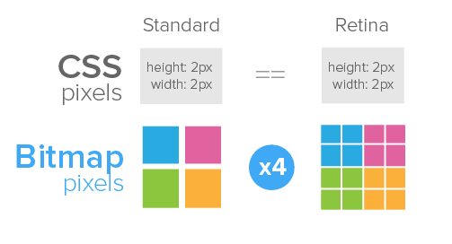

爱自由，不爱束缚；
爱冲动，也爱计划；
享受生活，追求完美；
爱体育，最爱梅西；
我不是别人，
我就是奇舞团的郝黎
解决问题：
提醒：flexbox的各种不同版本的写法，详情
(1)meta的设置
<meta name="viewport" content="width=device-width, initial-scale=1.0, maximum-scale=1.0, user-scalable=no">
(2)非背景图的图片设置——简单处理
比如：设备像素比：2
(3)背景图的图片设置
把图片作为background,
保证图片在各种尺寸手机上在都铺满;
background-image: url(http://p7.qhimg.com/t017c6559389bf81e29.png);
background-size: 100% auto;//充满整个屏幕，宽大于高的图片
background-repeat: no-repeat;
牺牲了一些高分辨率的体验:例子
建议：
(1)设置body的基准大小
body:{font: normal 62.5% tahoma,arial,"Microsoft YaHei",SimSun,sans-serif;}
(2)设计稿上文字为16px，那么
p : {font-size:16px;font-size:1.6rem}/*(16/10=1.6)*/
em,rem的区别
(1)能使用transition的不使用Animation动画（@keyframes）
-webkit-transition: all 1.5s ease;.anim{
-webkit-animation-name:loading;
-webkit-animation-duration: 1.5s;
-webkit-animation-iteration-count: infinite;
-webkit-animation-timing-function: linear;
}
@-webkit-keyframes loading{
from {-webkit-transform:rotate(0deg)}
to {-webkit-transform:rotate(360deg)}
}
(3)使用translate3d(0,0,0),强制浏览器进行硬件加速；不要使用过多，以免崩溃
-webkit-transform: translateZ(0);
-webkit-backface-visibility:hidden;
-webkit-perspective:1000;(1)事件代理的方式：在触摸屏幕的时候，浏览器给出的范围是事件代理的父元素，无法定位到具体到触摸元素
html:
- 第一行
- 第二行
- 第三行
js:
$('ul').delegate('li','click',function(e){
alert("aaaa");
});
(2)使用CSS属性去掉浏览器原生的样式，添加自定义属性
.logo{
-webkit-tap-highlight-color: rgba(0,0,0,0);
-webkit-tap-highlight-color: transparent; /* For some Androids */
}
.logo:active{
-webkit-transform: scale3d(0.9, 0.9, 1);//需要自定义一个active的动作
}
注意：还需要在html上动点手脚,添加ontouchstart="return true;"
建议：不使用zepto的touch模块，改用fastclick或者其他代码比如tappy或者tap.js
window.addEventListener( "load", function() {
FastClick.attach( document.body );
}, false );
//页面的click事件再也没有300ms延迟的烦恼
//原理是：在touchEnd事件之后，立马实现一个合成的click事件并且阻止掉300ms以后那个真正的click事件
//100行的小代码
//https://github.com/filamentgroup/tappy/
$( "a.my-link" ).bind( "tap", function( e ){
alert( "tap!" );
});
//用实现的tap事件代替click事件
解决方案：
(1) 用input="text"代替input="password"
(2)input.password-field{-webkit-text-security:disc;}
就是这么简单！
//利用CSS的transform属性
-webkit-transform: translate3d(-100%, 0, 0);
transform: translate3d(-100%, 0, 0);
又是这么简单！
另外：利用hash来表示不同的页面层
通过hash的变化来达到切换层的效果；
通过后面的例子详细看看
参考资料